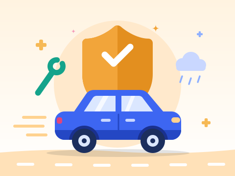
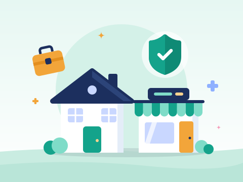

Rawat Inap
Biaya kamar, tindakan, dan perawatan selama dirawat, sesuai kelas dan limit polis.
Biaya rawat inap yang mendadak, penghasilan keluarga yang terhenti, kendaraan yang rusak, atau usaha yang terganggu. Pelajari pilihan perlindungannya tanpa istilah yang rumit, lalu diskusikan mana yang paling sesuai untuk Anda.
Informasi umum; ketentuan lengkap mengikuti polis resmi perusahaan asuransi
Membantu menanggung biaya perawatan medis sehingga tabungan keluarga tidak terkuras ketika sakit atau membutuhkan rawat inap.
Cocok untuk: individu, keluarga, dan siapa pun yang ingin melengkapi perlindungan dari BPJS Kesehatan atau asuransi kantor.

Biaya kamar, tindakan, dan perawatan selama dirawat, sesuai kelas dan limit polis.
Konsultasi dokter dan obat tanpa rawat inap. Pada banyak produk berupa manfaat tambahan.
Pembayaran langsung di rumah sakit rekanan sehingga Anda tidak perlu menalangi biaya terlebih dahulu.
Santunan bila terdiagnosis penyakit kritis tertentu yang tercantum dalam polis.
Manfaat dan ketentuan berbeda pada setiap produk dan perusahaan asuransi.
Memberikan uang pertanggungan kepada ahli waris bila tertanggung meninggal dunia, sehingga keluarga tetap memiliki dana untuk kebutuhan hidup, pendidikan anak, atau melunasi cicilan.
Cocok untuk: pencari nafkah yang memiliki tanggungan, seperti pasangan, anak, atau orang tua.

Perlindungan untuk jangka waktu tertentu, misalnya 10 atau 20 tahun. Premi umumnya lebih terjangkau untuk uang pertanggungan yang sama.
Biasanya tidak memiliki nilai tunai.
Perlindungan hingga usia lanjut sesuai ketentuan polis. Premi umumnya lebih tinggi.
Sebagian produk memiliki nilai tunai.
Besar uang pertanggungan yang sesuai berbeda untuk setiap keluarga dan dapat dihitung bersama saat konsultasi.
Melindungi kendaraan dari risiko kerugian, misalnya kecelakaan, pencurian, atau kerusakan, sesuai jenis jaminan dan perluasan yang dipilih.
Cocok untuk: pemilik mobil atau motor, termasuk kendaraan yang masih dalam cicilan.

Perbaikan di bengkel yang bekerja sama dengan perusahaan asuransi.
Tambahan perlindungan, misalnya banjir, gempa, atau huru-hara, dengan premi tambahan.
Menanggung kerugian orang lain akibat kendaraan Anda, sesuai limit polis.
Menjamin kerugian sebagian, seperti baret dan penyok, maupun kerugian total.
Premi lebih tinggi. Sering dipilih untuk kendaraan yang relatif baru.
Menjamin bila kendaraan hilang dicuri atau rusak berat dengan nilai kerusakan mencapai batas yang ditentukan polis (umumnya 75% dari harga kendaraan).
Premi lebih rendah.
Pilihan terbaik bergantung pada usia, nilai, dan pemakaian kendaraan Anda.
Melindungi rumah, tempat usaha, aset, dan kelangsungan bisnis dari risiko seperti kebakaran, bencana, atau kehilangan orang kunci.
Cocok untuk: pemilik rumah, pelaku UMKM, dan perusahaan.

Perlindungan bangunan dan isinya dari risiko seperti kebakaran, petir, dan ledakan, dengan perluasan sesuai pilihan.
Mengganti kehilangan pendapatan bila usaha berhenti sementara akibat risiko yang dijamin pada polis properti.
Asuransi jiwa atas orang kunci usaha, misalnya pemilik atau direktur, dengan perusahaan sebagai penerima manfaat.
Asuransi kesehatan kumpulan untuk karyawan, sebagai pelengkap fasilitas kerja.
Gambaran umum yang sering dipakai dalam perencanaan keuangan. Urutan yang tepat bisa berbeda untuk setiap orang dan dapat didiskusikan saat konsultasi.
Biaya berobat yang besar dapat menguras tabungan. Perlindungan kesehatan, termasuk BPJS Kesehatan, menjadi dasar.
Bila ada yang bergantung pada penghasilan Anda, asuransi jiwa membantu keluarga tetap memiliki dana.
Simpanan yang mudah dicairkan untuk kebutuhan mendadak, seperti kehilangan pekerjaan atau perbaikan mendesak.
Setelah fondasi kuat, investasi dapat dilakukan dengan lebih tenang sesuai profil risiko Anda.
Gunakan kalkulator protection gap untuk memperkirakan kekurangan perlindungan jiwa dan penyakit kritis, lalu diskusikan hasilnya bersama kami.
Coba KalkulatorJawaban bersifat umum. Ketentuan pasti mengikuti polis masing-masing produk.
Bisa, tergantung produknya. Sebagian produk memiliki fitur koordinasi manfaat dengan BPJS Kesehatan, sementara produk lain berjalan terpisah. Cara klaimnya berbeda, jadi pastikan Anda memahami ketentuan polis.
Asuransi tradisional berfokus pada perlindungan dengan manfaat yang sudah ditentukan dalam polis. Unit link menggabungkan perlindungan dan investasi, sehingga nilai investasinya dapat naik atau turun mengikuti kinerja dana. Pahami biaya dan risikonya sebelum memilih.
Jangan langsung menghentikan polis lama. Polis baru bisa memiliki masa tunggu dan ketentuan kondisi yang sudah ada sebelumnya. Sebaiknya bandingkan manfaat dan ketentuannya terlebih dahulu, misalnya melalui konsultasi.
Ceritakan kebutuhan Anda atau perlindungan yang sudah dimiliki. Kami bantu menjelaskan pilihan yang tersedia, tanpa keharusan membeli.